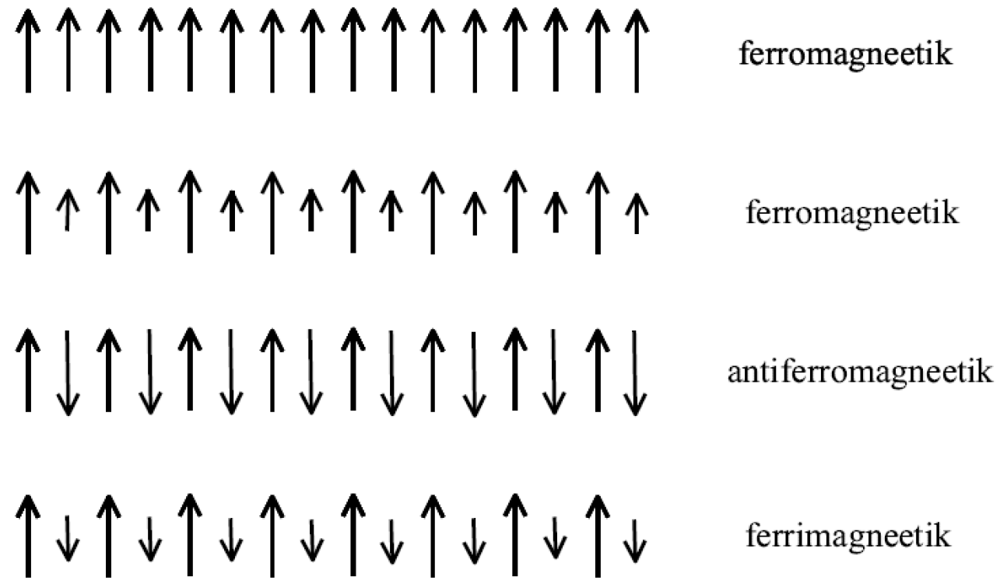

Magneetilised korrastused
Contents
6.4. Magneetilised korrastused¶
6.4.1. Ferromagnetism keskmise välja lähenduses¶
Eksisteerivad erinevad magneetilised korrastused. Pildil tähistavad nooled magneetiku kristallvõre sõlmedel lokaliseeritud magnetmomente.
{kind=link}
Ferromagneetikus on need magnetmomendid allpool teatud temperatuuri orienteeritud kõik ühes suunas
Kui ferromagneetikus on kaks alamvõret, siis nende alamvõrede sõlmedel lokaliseeritud magnetmomendid orienteeruvad jälle ühes suunas, kuid nende magnetmomentide moodulid on erinevad. Kahel esimesel juhul tekkib nullist erinev makroskoopiline magnetmoment ehk magneetumus.
Antiferromagneetikus on lokaliseeritud magnetmomendid orienteeritud antiparalleelselt. See tähendab, et makroskoopilist nullist erinevat magnetmomenti ei eksisteeri, aga mikroskoopilisel tasandil on siiski teatud magneetiline korrastus olemas.
Ferrimagneetikus on antiparalleelselt orienteeritud lokaalsed magnetmomentide moodulid erinevad
Saavad olla ka magneetiliste korrastuste keerukamad juhud
Olgu \(\hat{\mathbf{S}}_i\) on võre sõlmes nr \(i\) paikneva iooni osaliselt täidetud elektronkihi summaarse spinni operaator. Kasutame magneetilise korrastuse kirjeldamiseks hästi tuntud Heisenbergi mudeli, mis kasutab välises magnetväljas oleva spinnsüsteemi kirjeldamiseks hamiltoniaani
Selle operaatori esimene panus kujutab endast kristallvõre sõlmedes nr \(i\) ja \(j\) paiknevate spinnide interaktsiooni. See interaktsioon põhjustabki magneetilist korrastust. Teine liige arvestab välise magnetvälja mõjuga spinnidele. Lisaks
Summa \(\sum_{i,j}'\) tähistab, et \(i\neq j\) summeerimisel
\(J_{ij}=J_{ji}\) on spinn-spinn interaktsiooni konstant
\(\mu_\mathrm{B}\) on Bohri magneton
\(\mathbf{H}\) on välise magnetvälja tugevus
\(g<0\) on konstant, mis arvestab, millise spinniga on tegemist
Heisenbergi mudel ei ole täpselt lahendatav. See tähendab, et ei saa näiteks täpselt leida makroskoopilist magneetumust, mis on tekitatud spinn-spinn interaktsiooni poolt. Kõige levinum ligikaudne meetod antud hamiltoniaaniga kirjeldatud spinnsüsteemi omaduste uurimiseks on keskmise välja lähendus (tuntud ka kui molekulaarvälja lähendus). Selles skeemis asendatakse spinnidevaheline interaktsioon spinnile mõjuva teiste spinnide poolt tekitatud efektiivse (keskmise) väljaga
kus
on efektiivne magnetväli. Statistiline keskväärtus on defineeritud standartselt statistilise operaatori kaudu
Teeme veel järgmised lihtsustused
Me võtame arvesse interaktsiooni ainult antud võre sõlme lähimate naabritega: \(J_{ij}=J\neq 0\), kui \(i,j\) on lähimad naabrid, ja \(J_{ij}=0\), kui on teisiti.
Keskväärtuse \(\langle\hat{\mathbf{S}}_{j}\rangle\) loeme sõltumatuks võre sõlmest, \(\langle\hat{\mathbf{S}}_{j}\rangle\to \langle\hat{\mathbf{S}}\rangle\).
Sellisel juhul
kus \(n_0\) on lähimate naabrite arv ja \(N\) on võre sõlmede arv. Siin on kõik magnetvälja suunad võrdväärsed ja saab valida \(\mathbf{H}=(0,0,H)\) ja \(\mathbf{H}_\mathrm{eff}=(0,0,H_\mathrm{eff})\). Sellisel juhul võrdub keskmise välja hamiltoniaan
Leitud Hamiltoni operaatori omavektoriteks on \(|S_{1z},S_{2z}\ldots S_{Nz}\rangle=\Pi_{i=1}^N|S_{iz}\rangle\), kus \(|S_{iz}\rangle\) on operaatori \(\hat{S}_{iz}\) ortonormeeritud omavektorid, see tähendab \(\hat{S}_{iz}|S_{iz}\rangle=S_{iz}|S_{iz}\rangle\), kus \(S_{iz}\) on vastav omaväärtus. Tänu ortonormeerimisele kehtib \(\langle S_{iz}|S_{iz}'\rangle=\delta_{S_{iz},S_{iz}'}\).
Teeme ülesande konkreetsemaks. Olgu meil tegemist spinniga \(S=1/2\), see tähendab, et võre sõlmel lokaliseeritud spinn võrdub ühe elektroni spinniga. Sellisel juhul on operaatori \(\hat{S}_z\) omaväärtuseks \(S_z=\pm1/2\) ning \(g=-2.002\). Üldjuhul, kui on tegemist spinniga \(1/2\), siis spinnoperaatoril on kuju \(\hat{\mathbf{S}}=(\frac{1}{2}\hat{\sigma}_x,\frac{1}{2}\hat{\sigma}_y,\frac{1}{2}\hat{\sigma}_z)\), kus \(\hat{\sigma}_{x,y,z}\) on Pauli maatriksid
Operaatori \(\hat{S}_z\) omavektoriteks, mis vastavad omaväärtustele \(S_z=\pm1/2\), on
nii, et \(\hat{S}_z|\pm1/2\rangle=\frac{1}{2}\hat{\sigma}_z|\pm1/2\rangle=\pm\frac{1}{2}|\pm1/2\rangle\).
Valitud baasil võrdub tihedusmaatriks
Selle tulemuse saamiseks oli kasutatud (6.8), eksponendi \(\exp\left(-\frac{\hat{H}_{\mathrm{mf}}}{k_\mathrm{B}T}\right)\) rittaarendamine, omavektorite ortonormeerimine \(\langle S_{iz}|S_{iz}'\rangle=\delta_{S_{iz},S_{iz}'}\) ning saadud rea eksponendiks tagasi võtmine.
Meil on veel tarvis leida statistiline summa
Kasutades neid tulemusi, leiame spinni keskväärtus
Tuletuskäik on siin eelnevaga analoogne.
Magneetumus ehk makroskoopilise magnetmomendi tihedus on defineeritud, kui \(M=\frac{N}{V}\mu_\mathrm{B}g\langle \hat{S}_{z}\rangle\). Keskmise välja lähenduses on magneetumus võrdeline efektiivse magnetväljaga
Avaldis (6.9) defineerib meil ka magneetumuse, kuna \(\langle \hat{S}_{z}\rangle\sim M\). Samal ajal seisab avaldises (6.9) magneetumus eksponendis, sest \(H_\mathrm{eff}\sim M\). Seega tekkib meil võrrand magneetumuse määramiseks
Juhul, kui väline magnetväli puudub \(H=0\), saadakse magneetumuse jaoks võrrand
Sellel võrrandil on olemas nullist erinev reaalarvuline lahend \(M\neq 0\), kui \(J\sim\Lambda>0\) ja \(T<T_c\), kus faasisiirde temperatuuri
saab leida piirprotsessis \(M\to0\). II liiki ferromagneetilise faasisiirde temperatuuri \(T_c\) nimetatakse ka Curie-Weissi temperatuuriks.
Sõltuvust \(M=M(T)\) saab leida ainult numbriliselt ja see on tüüpiline korrastusparameetri jaoks II liiki faasisiirde puhul
kui \(T>T_c\), siis oleme paramagneetilises faasis, kus \(M=0\)
kui \(T<T_c\), siis realiseerub ferromagneetiline faas ja \(M\neq 0\)
faasisiirde punkti lähedal \(T\to T_c-\) kehtib \(M\sim\sqrt{T_c-T}\)
6.4.2. Antiferromagnetism keskmise välja lähenduses¶
Olgu meil jälle olukord, kui \(S=1/2\), ja puudub väline magnetväli. Ferromagneetiku magneetumus \(M\) rahuldab sel juhul keskmise välja lähenduses võrrandit (6.10). Üldistame seda võrrandit kahe alamvõrega süsteemi jaoks. Olgu \(M_{a}\) ja \(M_{b}\) alamvõrede \(a\) ja \(b\) magneetumused. Arvestame ainult erinevatel alamvõredel lokaliseeritud spinnide vahelist interaktsiooni ja seda omakorda ainult lähimate naabrite vahel. Alamvõredevaheliseks spinn-spinn interaktsioonikonstandiks on \(J_{ab}=J_{ba}\). Alamvõrede magneetumused rahuldavad siis võrrandisüsteemi
kus
ja \(N\) on sõlmede arv ühel alamvõrel: \(N_{a}=N_{b}\equiv N\).
Võrranditest (6.11) järeldub, et
alamvõrede magneetumused on samamärgilised \(\mathrm{sgn}(M_a)=\mathrm{sgn}(M_b)\), kui \(J_{ab}>0\). Tegemist on ferromagnetismiga.
kui \(J_{ab}<0\), siis alamvõrede magneetumused on vastasmärgilised \(\mathrm{sgn}(M_a)\neq\mathrm{sgn}(M_b)\). See uus lahend vastab antiferromagnetismile.
Tehtud eelduste korral saame võrranditest (6.11), et \(|M_a|=|M_b|\). Antiferromagnetilisele korrastusele vastav lahend \(M_a=-M_b\) (\(J_{ab}<0\)) realiseerub, kui \(T<T_{\mathrm{N}}\), kus Neeli temperatuuri
saab leida, kui minna piirile \(M_{a,b}\to0\). Temperatuur \(T_\mathrm{N}\) on antiferromagneetilise faasisiirde temperatuur. Seega, kui \(T<T_{\mathrm{N}}\), siis realiseerub antiferromagneetiline faas.